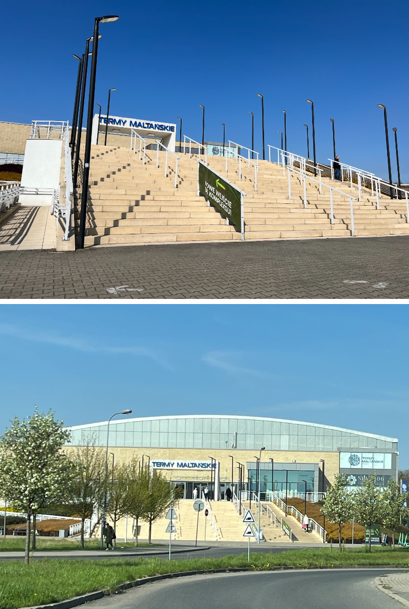
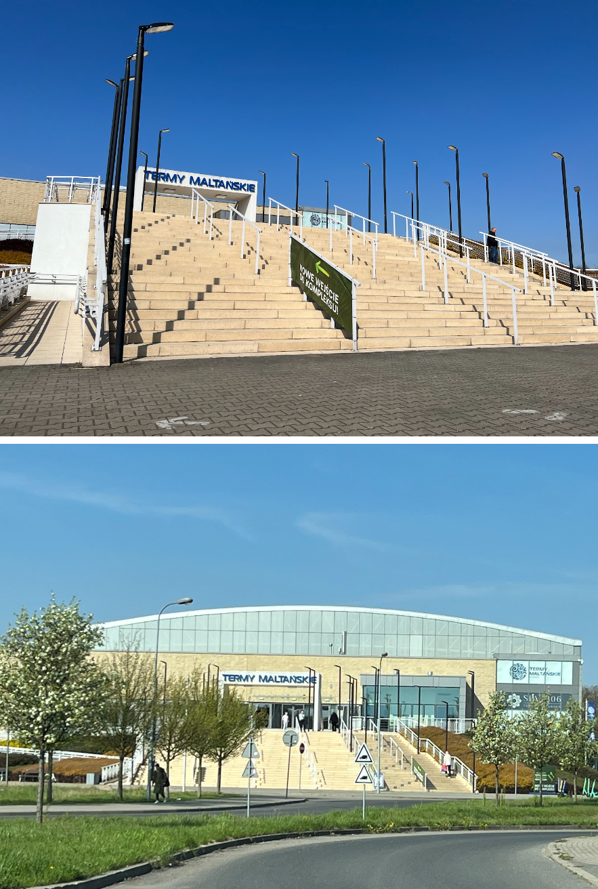

Termy Maltańskie
 
Termy Maltańskie - raj w samym centrum Poznania. Miejsce wprost stworzone dla każdego, kto kocha tropikalny klimat, relaks i dobrą zabawę. Nie brakuje tu basenów, zjeżdżalni, placów zabaw, rajskiej plaży i zawsze zielonej roślinności, która bujnie otacza baseny z lazurową wodą. Jest tu nawet wulkan, który góruje nad całą strefą niczym Mauna Kea na Hawajach. Wśród wielu basenów są i dwa całoroczne, z widokiem na Jezioro Maltańskie, które o każdej porze roku wygląda zjawiskowo.

Termy Maltańskie - raj w samym centrum Poznania. Miejsce wprost stworzone dla każdego, kto kocha tropikalny klimat, relaks i dobrą zabawę. Nie brakuje tu basenów, zjeżdżalni, placów zabaw, rajskiej plaży i zawsze zielonej roślinności, która bujnie otacza baseny z lazurową wodą. Jest tu nawet wulkan, który góruje nad całą strefą niczym Mauna Kea na Hawajach. Wśród wielu basenów są i dwa całoroczne, z widokiem na Jezioro Maltańskie, które o każdej porze roku wygląda zjawiskowo.